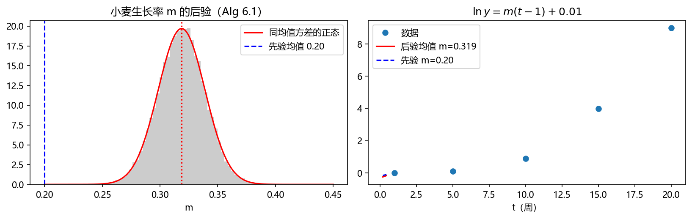
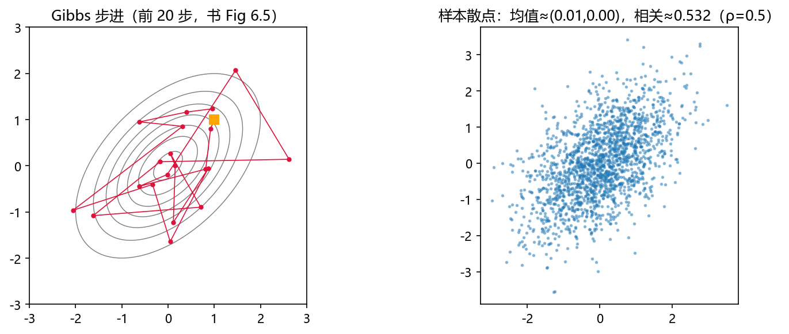
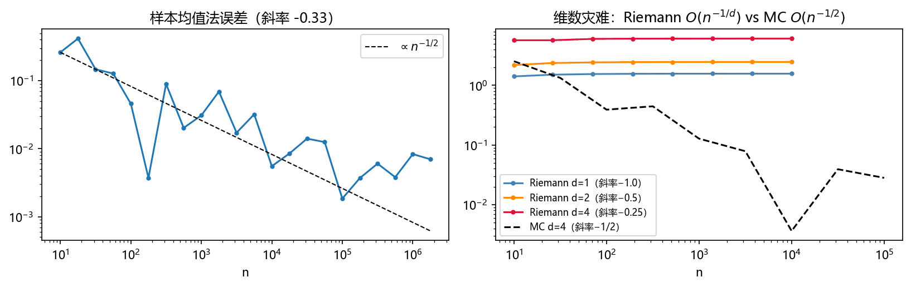
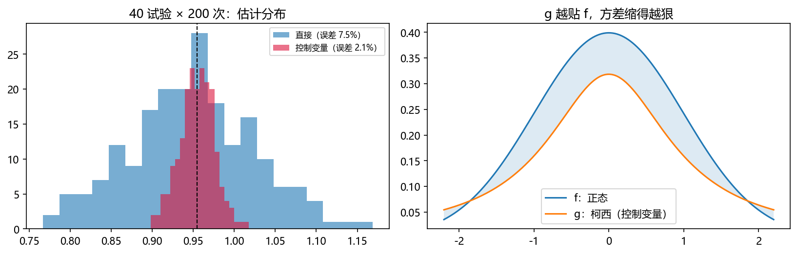
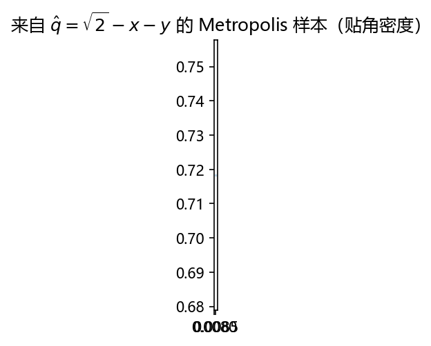
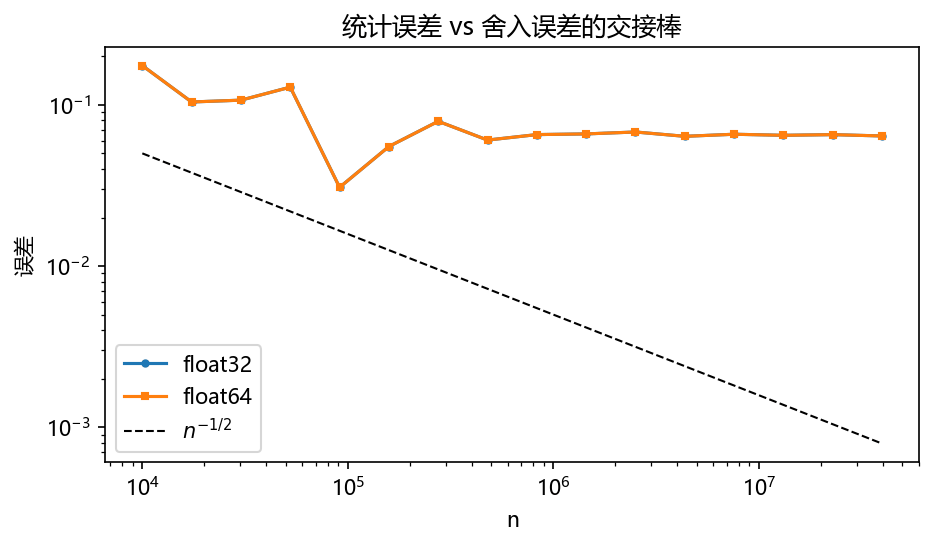

第 6 章 再谈马尔可夫链蒙特卡罗#
本章解决：把 MCMC 用到三件大事上——贝叶斯推断（先验×似然=后验，MCMC 绕过算不出的证据项）、Gibbs 抽样（多元分布的逐坐标采样，PyMC/BUGS/JAGS 的内核）、蒙特卡罗积分/求积（高维积分的终极武器 + 两大方差缩减技术 + MCMC 求积）。最后用舍入误差（§6.4）给全书画上工程句号：样本数加到 2400 万之后，浮点误差开始压过统计误差。 对照教材：Shonkwiler & Mendivil《Explorations in Monte Carlo Methods》第 6 章（pp.209–244，§6.1–6.4，公式编号 (6.1)–(6.24) 与笔记一致）。补充：Dunn & Shultis 的贝叶斯与 Gibbs 材料与其 §6 呼应；方差缩减在 Dunn 中更系统（Dunn 独有主题逆蒙特卡罗、线性算子方程以补充小节挂本章末尾）。
| 关键词 | 事实 |
|---|---|
| 贝叶斯更新 | \(\Pr(\theta\mid\text{obs})=\dfrac{\Pr(\text{obs}\mid\theta)\Pr(\theta)}{\Pr(\text{obs})}\)（式 (6.1)）；MCMC 不需要分母 |
| 先验/后验共轭 | beta 先验 × 二项似然 → beta 后验（表：Poisson→Gamma、正态→正态/Gamma…） |
| MAP | 后验密度最大值点；后验预测 \(\Pr(\text{heads}\mid\text{obs})=10/16\)（式 (6.3)） |
| Gibbs 抽样 | 逐坐标按满条件分布轮抽；双正态例 \(X\mid Y\sim N(\rho y,1-\rho^2)\)（式 (6.9)） |
| MC 求积 | \(\hat\theta=\frac1n\sum\frac{f(X_i)}{q(X_i)}\)（式 (6.15)）；误差 \(\sigma^2/n\)（6.17）——与维数无关 |
| 确定性求积 | \(d\) 维 Riemann 和误差 \(O(n^{-1/d})\)——"维数灾难"，MC 在 \(d>2\) 称王 |
| 控制变量 | 用易积分的 \(g\approx f\) 吸收大头：误差由 \((f-g)^2\) 决定 |
| 重要性采样 | \(q\) 在 \(f\) 大处多采样；理想 \(q\propto f\)（归一化恰是待求积分） |
| MCMC 求积 | 从未归一化 \(\hat q\) 采样，归一化 \(Q\) 另估：误差仍 \(O(n^{-1/2})\) |
本章代码：nb/ch06.ipynb（种子 2029）。12 个实验：MLE 与贝叶斯更新、beta 共轭可视化、后验预测、小麦生长的 MCMC 后验、Gibbs 抽双正态、MC 求积基础与误差 \(O(n^{-1/2})\)、维数灾难对比、球体积（3D/4D）、控制变量、重要性采样、MCMC 求积（权重函数）、舍入误差。
实验索引
| # | 实验 | 书节 | 产出图 |
|---|---|---|---|
| 1 | MLE vs 贝叶斯 | §6.1 | out-6-1.png |
| 2 | beta / Poisson-Gamma 共轭 | §6.1 | out-6-2.png |
| 3 | 无共轭时直接最大化核 | §6.1 | out-6-3.png |
| 4 | 小麦生长 MCMC 后验 | §6.1 | out-6-4.png |
| 5 | Gibbs 抽双正态 | §6.2 | out-6-5.png |
| 6 | 样本均值法求积 | §6.3 | out-6-6.png |
| 7 | 球体积 3D/4D | §6.3 | out-6-7.png |
| 8 | 控制变量 | §6.3.1 | out-6-8.png |
| 9 | 重要性采样 | §6.3.1 | out-6-9.png |
| 10 | MCMC 求积 | §6.3.2 | out-6-10.png |
| 11 | 舍入误差 | §6.4 | out-6-11.png |
6.0 本章导图#
6.1 贝叶斯推断（Bayesian Inference）#
抛硬币 10 次出 7 正——这枚硬币正面概率是 70% 吗？
极大似然估计（maximum likelihood estimate, MLE）：哪个 \(p\) 最能使"7/10"发生？二项 \(\binom{10}{7}p^7(1-p)^3\) 在 \(p=0.7\) 最大——但这只是"让数据最可能"，没利用任何先验知识（经验告诉我们硬币多半 50/50）。
贝叶斯路线：设 \(\theta\)=事件"这是 70/30 币"，备择 \(\theta^c\)=50/50 币。先验：\(\Pr(\theta)=0.1,\ \Pr(\theta^c)=0.9\)。由贝叶斯公式（第 1 章式 (1.30)）：
其中 \(\Pr(\text{observation}|\theta)\) 叫似然函数（likelihood function）。代入：\(\Pr(\text{obs}|\theta)=\binom{10}{7}0.7^70.3^3=0.02668\)，\(\Pr(\text{obs}|\theta^c)=\binom{10}{7}0.5^7 0.5^3=0.10547\)：
先验 10% 被数据推到 20%（后验概率 posterior）——数据没能翻盘，但更新了信念。把 \(\Pr(\theta)\) 看成分布：\(\Pr(\theta)=0.9\,\delta_{0.5}(\theta)+0.1\,\delta_{0.7}(\theta)\)（Dirac δ），后验 \(=0.7981\,\delta_{0.5}+0.2019\,\delta_{0.7}\)。
连续版：\(\theta\) 本来就该取连续值。取 beta 先验 \(\mathrm{Be}(3,3)\)（峰在 0.5，第 2 章 §2.8.1 的老朋友），代入 (6.1)：
后验仍是 beta——\(\mathrm{Be}(10,6)\)！先验峰 0.5 被数据拉到 0.642。归一常数 \(c=\frac{15!}{9!\,5!}=30030\)（由 \(B(\alpha,\beta)=\frac{\Gamma(\alpha)\Gamma(\beta)}{\Gamma(\alpha+\beta)}\)，式 (2.28)(2.29)）。
最大后验估计（MAP）与后验预测分布
- MAP（maximum a posteriori estimate）：后验密度的最大值点。Be(10,6) 的 MAP = 0.642（书 Fig 6.1）。
- 后验预测分布（posterior predictive distribution）："下一掷是正面"的概率要对 \(\theta\) 的不确定性平均：
比 MAP 略低——预测把"θ 也可能偏小"的概率算进去了。数理统计复习：\(\frac{10}{16}\) 恰是 \(\frac{\alpha'}{\alpha'+\beta'}=\frac{10}{10+6}\)（Laplace 加一规则 \(\frac{k+1}{n+2}\) 的 beta 版）。
共轭分布（conjugate distributions）：先验与后验同族时，先验叫似然的共轭先验。速查表（书表）：
| 似然 | Binomial | Poisson | 正态（σ 已知） | 正态（μ 已知） | Exponential | Gamma |
|---|---|---|---|---|---|---|
| 共轭先验 | Beta | Gamma | Normal | Gamma | Gamma | Gamma |
共轭带来闭式后验——但很多问题没有共轭先验。此时注意 (6.1)(6.2) 的结构：分母 \(\Pr(\text{obs})\) 与所有常数都不含 \(\theta\)，MAP 优化可以全部丢弃常数直接最大化 \(\Pr(\text{obs}|\theta)\Pr(\theta)\)（第 5 章的优化工具上场）；想要整个后验分布则用 MCMC 采样右端——它不需要归一化，这正是 MCMC 在贝叶斯统计里无可替代的原因。
MCMC 算后验（小麦生长例，[Eri76][Ber21]）：田间小麦干重对数随时间增长（Table 6.1：\(t=1,5,10,15,20\) 周，\(\ln y=0.01,0.1,0.9,4,9\)）。模型：增长率 \(m\)，\(\frac{\ln y-0.01}{t-1}=m\)（式 (6.4)，认定 (1, 0.01) 点）。最小二乘直接拟合给 \(m\approx0.28\)；但历史经验认为 \(m\approx0.20\)——用贝叶斯融合两者：
- 先验：\(\Pr(m)=\frac{1}{\sqrt{2\pi}0.04}e^{-\frac12(\frac{m-0.20}{0.04})^2}\)（正态，σ 固定 0.04）；
- 似然：5 个数据点偏差 \(\ln y(t,m)-\ln y_i\) 各自 \(N(0,0.06)\)（式 (6.5)）；
- 后验 \(\propto\) 先验 × 似然 → Metropolis 采样（burn-in 1000，取 10 万样本）。
结果（书 Fig 6.3）：后验近正态、均值 0.32、方差 0.0004——历史值 0.20 被数据更新到 0.32。
原书笔误
书正文说数据偏差的标准差是 0.06（式 (6.5) 也印 0.06），但 Alg 6.1 的代码行是 sigma_l = 0.6，且书报的结果（均值 0.32、方差 0.0004）只有在 σ=0.6 下复现（σ=0.06 时似然值 \(e^{-10^3}\) 量级、连比值都浮点下溢，链完全不动）。两处应统一为 0.6——实验 4 以 0.6 复现书值。

6.1.1 PyMC（Pymc3）#
Python 的贝叶斯推断模块 PyMC：用户只写先验与似然，模块自动建链、跑 MCMC、出诊断图——让不懂 Metropolis 细节的人也能做贝叶斯分析。书给出两段完整代码（Alg 6.2 硬币问题：pm.Beta 先验 + pm.Bernoulli 似然 + pm.Metropolis 步进；Alg 6.3 小麦问题：pm.Normal 先验/似然 + ArviZ 的 plot_posterior 出 HDI 图）。本章 notebook 用 NumPy 手写等价实现（不装 PyMC 依赖），结构一一对应。
6.2 Gibbs 抽样（Gibbs Sampling）#
第 2 章 §2.10 的联合抽样要求边缘与条件都能显式采样；Gibbs 抽样把"显式"放宽为"满条件分布可采样"——这正是贝叶斯多元后验的常态。
方法：目标联合密度 \(f(x_1,\dots,x_n)\)。给定当前 \(X^t=(x_1^t,\dots,x_n^t)\)，逐坐标更新（新值立即可用）：
- \(x_1^{t+1}\sim f(x_1|x_2^t,\dots,x_n^t)\)
- \(x_2^{t+1}\sim f(x_2|x_1^{t+1},x_3^t,\dots,x_n^t)\)
- …… \(x_n^{t+1}\sim f(x_n|x_1^{t+1},\dots,x_{n-1}^{t+1})\)。
Gibbs 是 MCMC 方法：样本相关、渐近逼近不变密度；顺带免费得到任何边缘的样本（只看对应坐标）、期望照常平均。它常与贝叶斯推断联用（BUGS = Bayesian inference Using Gibbs Sampling；JAGS = Just Another Gibbs Sampler）。历史：常归功于 Geman & Geman 1984（图像复原、Gibbs 场），但源头在 1953 Metropolis 论文（多粒子系统逐粒子更新）。
连续例（双变量正态）：
（\(\rho\) 为相关系数）。配方 \(x^2-2\rho xy+y^2=(x-\rho y)^2+(1-\rho^2)y^2\) 后对 \(x\) 积分得边缘
条件密度（书给出完整推导 (6.8)）：
\(X|Y\sim N(\rho y,\ 1-\rho^2)\)，由对称性 \(Y|X\sim N(\rho x,\ 1-\rho^2)\)——都是正态，直接可采！书 Fig 6.5 画出等高线上的 Gibbs 步进（水平到新 \(x\)、竖直到新 \(y\)）。离散双元情形的收敛证明在书 Fig 6.6（质量流入流出 + 边缘分解）。

6.3 蒙特卡罗积分：求积（Monte Carlo Integration: Quadrature）#
估计 \(\theta=\int_D f(\mathbf x)\,d\mathbf x\)（式 (6.11)）。先看确定性方法的天花板：
- \(d=1\)：Riemann 和 \(\sum f(x_i)h\)，子区间误差 ≤ \(\frac{m_i}{2}h^2\)（线性化斜率 \(m_i\)），总误差 \(<\frac M2 n^{-1}\)（梯形 \(O(n^{-2})\)、Simpson \(O(n^{-4})\)，脚注）；
- \(d=2\)：\(n\) 项分给两轴、\(h=n^{-1/2}\)，误差 \(\le\frac M2n^{-1/2}\)；
- 一般 \(d\) 维：误差 \(O(n^{-1/d})\)——10 维问题要多 10 个数量级的样本才多 1 位精度（维数灾难）。且网格定好后加点必须重排整个网格。
hit-or-miss 回顾（第 1 章 §1.4 的深化）：\(H\sim\) 二项、\(\hat\theta=(H/n)M(b-a)\)（式 (6.12)）、
（\(p(1-p)\le\frac14\)），误差 \(O(n^{-1/2})\)——与维数无关。要减半误差得跑 4 倍样本；多 1 位精度要 100 倍。习题 15 证明 hit-or-miss 恒劣于下面的均值法（平方误差差 \(\frac1n\int f(1-f)dx\)）。
样本均值估计量（sample mean estimator）——主力方法。取任意 pdf \(q>0\) 于 \([a,b]\)：
由大数定律：
\(q\) 是自由选择的——这是方法威力的源泉。均匀 \(q=\frac{1}{b-a}\) 给 \(\hat\theta=\frac{b-a}{n}\sum f(X_i)\)（式 (6.16)）。无偏（\(\mathbb E(\hat\theta)=\theta\)），平方误差
收敛 \(O(n^{-1/2})\)，与 hit-or-miss 同阶但常数更小。推广一：广义积分——推导不要求域有限或 \(f\) 有界：\(\int_0^\infty\frac{1}{(x+1)^2}dx=1\) 用指数 \(q\)；\(\int_0^4(-2+(x-2)^2+\frac{1}{\sqrt x})dx=\frac43\) 用均匀 \(q\)（书两例，Alg 6.5；误差 0.06%/0.01%）。\(q\) 该在 \(f\) 大处多采样——伏笔见重要性采样。推广二：多维——(6.15) 对 \(d\) 维照常成立，误差仍 \(O(n^{-1/2})\)：高维积分 MC 称王。
书例（3D/4D 球体积）：第一卦限单位球体积 \(\int\int\int\sqrt{1-(x^2+y^2)}\,dydx\approx0.523599\)（式 (6.19)，\(=\frac12\cdot\frac\pi6\)）。采样密度 \(q\) = 球域上的均匀分布：极坐标雅可比 \(r\) 给出 \(q(r,\theta)=\frac{4r}{\pi}\)，边缘 \(q_R=2r\)（cdf \(r^2\)，反演 \(R=\sqrt{U_1}\)）、条件 \(q_{\theta|R}=\frac2\pi\)（\(\theta=\frac\pi2U_2\)）——100% 高效（对照"方形撒点丢弃法"仅 78.5%）。4D 版（式 (6.18)，值 \(\pi^2/32\approx0.308552\)）：球坐标雅可比 \(\rho^2\sin\phi\)，得 \(\rho=\sqrt[3]{U_1}\)、\(\phi=\arccos(1-U_2)\)、\(\theta=\frac\pi2U_3\)（书 Alg 6.7，误差 0.86%）。

6.3.1 方差缩减（Variance Reduction）#
平方误差的分解（式 (6.21)(6.22)，由 (1.24)(1.17)）：
一切方差缩减都在 attack \(\operatorname{var}(f/q)\)。
控制变量（control variate）：找易积分的 \(g\approx f\)，令 \(G=\int_Dg\)，则
估计量 \(\hat\theta_g=\frac1n\sum\frac{f(X_i)-g(X_i)}{q(X_i)}+G\)——误差由 \((f-g)^2\) 决定：\(g\) 越贴 \(f\) 缩得越狠。书例：正态密度在 \([-2,2]\) 的积分 ≈0.9545，取柯西密度当控制变量（对称、可解析积分 \(G=\frac2\pi\arctan2\approx0.70483\)）；40 次试验下直接估计误差 ~10%、控制变量 ~0.7%（Alg 6.8）。
重要性采样（importance sampling）：\(q\) 由我们选——\(f\) 大处 \(q\) 大、\(f\) 小处 \(q\) 小；理想 \(q=f/\theta\) 但归一化就是待求积分。书例 1：用（截断归一的）正态密度采样估柯西的 \([-2,2]\) 积分：均匀 1% vs 正态 0.8%。书例 2（2D）：\(\int_0^{\sqrt2}\int_0^{\sqrt2-x}\big(\frac{1}{\sqrt{x^2+y^2}}-1\big)dydx=2\ln(1+\sqrt2)-1\approx0.7627\)，域是三角形；斜坡采样 \(q_s=c(\sqrt2-x-y)\)（原点大、边界为零）对比均匀采样：误差 5% vs 7%（2000 次试验）。
原书笔误
书 Fig 6.13 反演 \(X\) 的 cdf 后印作 \(X=\sqrt2\,(1-U^{3/2})\)，但其自身推导（解 \(U=\frac{2^{3/2}-(\sqrt2-x)^3}{2^{3/2}}\)）给出的是 \(X=\sqrt2\,(1-U^{1/3})\)——三次根，不是 \(3/2\) 次幂；书 Alg 6.10 的代码 u1**0.334 也印证正确指数是 \(1/3\)。实验 9 用 \(1/3\) 复现书值（斜坡 4.4% vs 均匀 6.4%）；误用 \(3/2\) 会让采样器与声称的 \(q_s\) 失配，误差爆炸到 \(10^6\%\) 量级。

6.3.2 MCMC 在求积中（MCMC in Quadrature）#
两类难题求 MCMC：(a) 带权积分 \(\int_Df(x)w(x)dx\)（统计物理常见，\(w\ge0\)）；(b) 想用某形状的采样器 \(\hat q\) 但采不出样。
权函数路线：\(W=\int_Dw(x)dx\)（式 (6.23)），则 \(\int f\,w=W\int f\frac{w}{W}dx\)（式 (6.24)）——\(w/W\) 是密度，用 MCMC（如 Metropolis）从它采样；\(W\) 本身当普通积分另估。两个 \(O(n^{-1/2})\) 的估计相乘仍是 \(O(n^{-1/2})\)（\((a\pm\epsilon)(b\pm\epsilon)=ab\pm(a+b)\epsilon+\epsilon^2\)），只是常数变大、需要更多试验。书例：\(\theta=\int_0^\infty x^2e^{-x/2}dx=16\)，\(w=e^{-x/2}\)（\(W=2\)，即 \(E(1/2)\)），MCMC 采样 + 均匀密度估 \(W\)——10 万次试验达到几个百分点精度（Alg 6.11）。
任意密度路线：\(\hat q\ge0\) 非负即可，\(Q=\int\hat q\)，\(q=\hat q/Q\)：
\(Q\) 独立估计（如用域上均匀采样比 \(\hat q/h_{\text{unif}}\)）。书例： revisit 三角域积分 0.7627，\(\hat q=\sqrt2-x-y\) 由 MCMC 采样（\(Q=2^{3/2}/6\) 另估）：20 万次试验误差 1.6%（对照：精确归一斜坡采样 0.14%、均匀 0.06%）——MCMC 求积可行但常数更大，能不用就不用。

6.4 舍入误差（Round-off Error）#
给求积加样本，精度先按 \(1/\sqrt n\) 改善——然后停在某个水平，甚至反弹。这是舍入误差（round-off error）：计算机有限精度（大多数数需无穷位才能精确表示；\(1/3\) 在十进制也无穷）。
浮点表示：类科学计数法但小数点挪到第 0 位。547.2843 = \(0.5472843\times10^3\)：幂叫指数（exponent）、小数部分叫尾数（mantissa）。设机器只存 6 位十进制：547.2843 存成 \(0.547284\times10^3\)（误差 0.0003）。
两大杀手场景：
- 大小悬殊的数相加：\(547.284+0.0138226\)。对齐指数后 \(0.547284+0.0000138226\)——第二个数只有 1–2 位活下来，结果 \(0.547297\times10^3\)，第 4 位起全错；若第二个数是 \(10^{-4}\) 量级则被当成零。
- 相近数相减：\(1256.846-1256.832\)：\(0.125684\times10^4-0.125683\times10^4=0.000001\times10^4=0.01\)——7 位精度进来、1 位精度出去；精确差 0.014，误差 28.5%。（数理统计/数值分析里这叫灾难性抵消 catastrophic cancellation。）
每次算术操作都带截断误差——样本数 crank 上去之后，数值误差总会在某处压过统计误差。书 Fig 6.14：\(\log(\text{error})\) vs \(\log(n)\) 在 \(n\approx e^{17}\approx24{,}000{,}000\)（32 位浮点）后反弹，此前斜率 ≈ −0.48 ≈ \(1/\sqrt n\) 定律。实践守则：双精度 + 别一味堆样本；要看误差曲线的拐点。

补充（Dunn & Shultis）：逆蒙特卡罗与线性算子方程（Dunn 独有主题）
- 逆蒙特卡罗（inverse Monte Carlo）：正向 MC 是"已知分布 → 采样出响应"；逆向是"观测响应 → 反推分布/参数"。做法上与本章 §6.1 贝叶斯推断同构：把未知分布参数 \(\theta\) 当随机变量、观测当数据、后验用 MCMC——Dunn 单列一章系统化（候选采样与接受准则直接从响应方程反解）。
- 线性算子方程的 MC 解：积分方程 \(\int k(x,y)u(y)dy=f(x)\) 等的 Neumann 级数展开可读作"随机游走的期望"——粒子按核 \(k\) 游走、按源 \(f\) 记分，游走统计给出 \(u\)（与第 4 章 §4.7 电压=游走概率是同一思想的推广）。这给出与确定性迭代法（Gauss–Seidel 等）互补的无网格逐点解法。
- 两主题在 Explorations 骨架中无对应节，按本笔记体例挂本章末尾；深入见 Dunn & Shultis 原书相应章节。
补充（书 Notes）：贝叶斯统计的版图
贝叶斯方法与经典推断的分歧在于用新数据更新不确定性的视角：先验 \(\times\) 似然给后验，可对参数做显式概率陈述。"Big Data"时代 + 算力 + MCMC 的成熟让贝叶斯方法爆发（[Lee12] 入门）。史话：Bayes 定理本人未发表，由友人身后刊出；"逆概率"由 Laplace 大展；Gibbs 采样通常记于 Geman & Geman [GG84] 1984（图像复原），但 1953 Metropolis 论文已含逐粒子更新。Gibbs 采样诱导马尔可夫链，"通常"以几何速率收敛（次特征值控制；Gibbs 场的技术结果见 [Ber21] Ch.7）。
坑与陷阱#
1. 贝叶斯更新别把分母丢了又捡回来
MCMC 采后验只用 \(\text{似然}\times\text{先验}\)；若又想"归一化一下"，就得算 \(\Pr(\text{obs})=\int\text{似然}\times\text{先验}\,d\theta\)——高维下正是算不出的那个积分。直方图密度本身就是归一的后验近似。
2. 先验不是摆设——它决定稀数据下的一切
7/10 的数据把 10% 先验只推到 20%（\(\theta\) vs \(\theta^c\) 离散例）；先验 Be(1,5)（书习题 2）则会把 MAP 拉向别处。报贝叶斯结果必须报先验。
3. Gibbs 的条件要用'最新'的坐标值
\(x_2^{t+1}\sim f(x_2|x_1^{t+1},\dots)\) 里是刚抽到的 \(x_1^{t+1}\)——全部用旧值（同步更新）是另一条链，收敛性完全不同（第 2 章坑 8 的 Gibbs 版）。
4. 重要性采样的 q 支持必须罩住 f
\(f\) 非零而 \(q=0\) 的区域永远采不到 → 系统性漏掉质量且直方图看不出来（第 2 章坑 5 的求积版）。尾指数先比再选。
5. MCMC 求积是最后手段
它把"反演归一"换成"两个 \(O(n^{-1/2})\) 估计相乘"——常数变大、误差叠加（书例：0.14%→1.6%）。凡能解析归一或用接受-拒绝的，先走那条路。
6. 相近数相减是精度黑洞
方差计算 \(\mathbb E(X^2)-\mathbb E(X)^2\)、协方差、大数加减累积——重写公式（如 Welford 递推）而不是硬减。float32 下 2400 万样本后误差反弹（书 Fig 6.14）。
7. hit-or-miss 的'打中率'不是密度
它估的是面积比，转成积分要乘容器体积 (6.12)；别把 \(H/n\) 直接当 pdf 值去和理论密度比。
速览#
- 贝叶斯 (6.1)：先验 × 似然 → 后验；7/10 例把 10% 推到 20%（离散）/ 峰 0.5→0.642（beta）。
- beta 共轭：Be(α,β) 先验 + \(k/n\) 数据 → Be(α+k, β+n−k)；MAP=0.642，后验预测 10/16 (6.3)。
- 共轭表：Binomial→Beta、Poisson→Gamma、正态（σ 已知）→Normal…
- MCMC 后验不需要 \(\Pr(\text{obs})\)；小麦生长例 0.20→0.32；PyMC 三行建模。
- Gibbs：满条件轮抽；双正态 \(X|Y\sim N(\rho y,1-\rho^2)\) (6.9)；离散证明 Fig 6.6。
- 确定性求积误差 \(O(n^{-1/d})\)（维数灾难）；MC 恒 \(O(n^{-1/2})\)，\(d>2\) 称王。
- 样本均值估计 (6.15)：无偏、误差 \(\sigma^2/n\) (6.17)；\(q\) 自由选择；广义积分直接套用。
- 球体积：极/球坐标雅可比造 100% 高效采样（3D 0.5236、4D 0.3086）。
- 控制变量：\(G+\widehat{\int(f-g)}\)，误差看 \((f-g)^2\)（柯西控正态 10%→0.7%）。
- 重要性采样：\(q\) 贴 \(f\)（斜坡采样 7%→5%）；支持必须罩住。
- MCMC 求积：权函数 (6.24) 或任意 \(\hat q\)（\(Q\) 另估）；通用但常数大。
- 舍入误差：大数吃小数、相近相减；n≈2400 万（32 位）后误差反弹。
术语速查#
| 英文 | 中文 | 一句话 |
|---|---|---|
| maximum likelihood estimate | 极大似然估计 | 让数据最可能的参数值 |
| likelihood function | 似然函数 | \(\Pr(\text{obs}\mid\theta)\) 视为 θ 的函数 |
| prior / posterior | 先验 / 后验 | 观测前 / 后的信念分布 |
| maximum a posteriori (MAP) | 最大后验估计 | 后验密度最大值点 |
| posterior predictive | 后验预测分布 | 对 θ 不确定性平均后的预测 |
| conjugate prior | 共轭先验 | 与似然配对得同族后验 |
| Dirac delta | 狄拉克 δ | 点质量"密度" |
| Gibbs sampling | Gibbs 抽样 | 满条件分布逐坐标轮抽 |
| full conditional | 满条件分布 | \(f(x_i\mid\text{其余全部})\) |
| BUGS / JAGS | （软件） | Gibbs 采样器家族 |
| quadrature | 求积 | 数值积分（此处 MC 版） |
| sample mean estimator | 样本均值估计量 | \(\frac1n\sum f/q\)（6.15） |
| unbiased estimator | 无偏估计量 | 期望恰为目标 |
| curse of dimension | 维数灾难 | 确定性求积 \(O(n^{-1/d})\) |
| Jacobian | 雅可比 | 坐标变换的密度伸缩因子 |
| control variate | 控制变量 | 易积分近似吸收大头 |
| importance sampling | 重要性采样 | \(q\) 贴 \(f\) 降方差 |
| weight function | 权函数 | 带权积分的 \(w(x)\) |
| round-off error | 舍入误差 | 有限精度表示误差 |
| floating point | 浮点 | 尾数×指数表示 |
| catastrophic cancellation | 灾难性抵消 | 相近数相减丢精度 |
覆盖自查#
原书小节 → 笔记位置
| 原书位置 | 内容 | 笔记位置 |
|---|---|---|
| 章首 | 三主题总览 | 导语 |
| §6.1 | 7/10 硬币：(6.1)、δ 分布、beta 先验 (6.2)、MAP、后验预测 (6.3)、共轭表 | §6.1 |
| §6.1（续） | 小麦生长 (6.4)(6.5)、Alg 6.1 MCMC 后验（Fig 6.2/6.3） | §6.1 |
| §6.1.1 | PyMC（Alg 6.2/6.3，Fig 6.4） | §6.1.1 |
| §6.2 | Gibbs：方法、双正态 (6.6)–(6.10)（Fig 6.5）、离散证明（Fig 6.6）、Alg 6.4 | §6.2 |
| §6.3 | 确定性求积误差、hit-or-miss (6.12)(6.13)、样本均值 (6.14)–(6.17)、广义积分两例（Alg 6.5）、多维、球体积 (6.18)–(6.19)（Alg 6.6/6.7，Fig 6.9/6.10） | §6.3 |
| §6.3.1 | 方差缩减：分解 (6.21)(6.22)、控制变量（Alg 6.8）、重要性采样（Alg 6.9/6.10，Fig 6.12/6.13） | §6.3.1 |
| §6.3.2 | 权函数 (6.23)(6.24)（Alg 6.11）、任意密度（Alg 6.12） | §6.3.2 |
| §6.4 | 浮点表示、两大误差场景、Fig 6.14 | §6.4 |
| Notes | 贝叶斯版图、Gibbs 史话与收敛率 | §6.1/§6.2 补充框 |
| Problems 1–18 | Poisson-Gamma 共轭（P1）、先验敏感性（P2）、pizza MAP（P3）、铸币机（P4）、A/B 检验（P5）、误差率验证（P6/7）、5-ball/6-ball（P8/9）、4 球表面积（P10）、日晒积分（P11/12）、控制变量进阶（P13/14）、收敛对比（P15–18） | P1/P6/P8 思路入对应节；逆 MC、线性算子方程挂补充小节 |
补充阅读（Dunn & Shultis）
§6（MCMC）与本章 §6.⅙.2 平行；其方差缩减章更系统（对偶变量、分层采样等本书未展开）；逆蒙特卡罗与线性算子方程两章为 Dunn 独有，已按体例挂本节末尾补充小节。